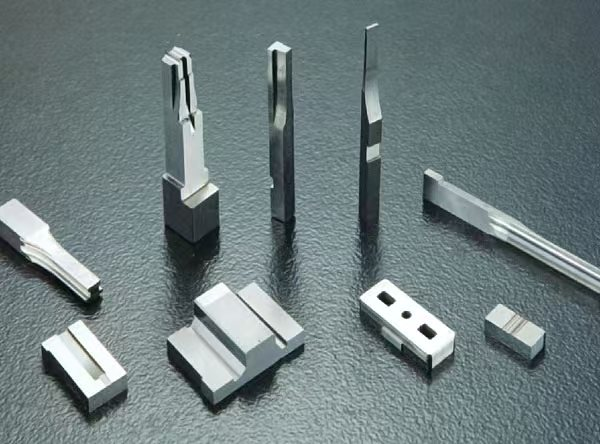

Technical Blog
Advantages of Tungsten Carbide Parts
A practical guide to selecting tungsten carbide for wear-resistant punches, inserts and precision tooling components.

Overview
Tungsten carbide parts are widely used in precision tooling because they combine high hardness, wear resistance and dimensional stability. Compared with many steels, carbide can maintain working edges longer under suitable abrasive or repetitive contact conditions. This makes it relevant to connector punches, precision stamping inserts, cutting edges, guide components and mold wear parts. The expected benefit depends on grade selection, geometry, impact load, coating and the operating environment.
Wear Resistance
The first advantage is wear resistance. In tooling applications, a component may contact metal strip, resin, ceramic, fixture surfaces or other hard materials thousands or millions of times. A steel part may wear quickly, changing the product dimension or creating burrs. A correctly selected carbide grade can slow wear and maintain the functional geometry longer. This is why carbide is often used for punches and inserts in connector and precision stamping industries.
Edge Stability
The second advantage is edge stability. Small cutting edges, micro blades and formed profiles are sensitive to rounding, chipping and deformation. Carbide can maintain a sharp or controlled edge when the application is suitable. However, carbide is not indestructible. It is hard but can be brittle, so the design must consider impact, corner radius, support, coating and assembly condition. A good supplier reviews these risks before machining.
Dimensional Stability
The third advantage is dimensional stability in precision components. Carbide is often chosen when the buyer wants consistent performance across repeated cycles. Combined with PG grinding, wire EDM and EDM, carbide parts can be produced with accurate profiles and fine features. For example, a connector punch may require a formed edge with ±0.002mm tolerance. The material, grinding process and inspection method must work together to achieve that target.
Carbide Grade Selection
Carbide grade selection matters. Different grades balance hardness, toughness, grain size and binder content. Jinyi lists Japanese carbide materials such as KD, EF, FD and RD series, and can review alternatives from Taiwan or China when cost and performance targets require it. Buyers should avoid specifying only the word carbide without grade or application details. The working environment, expected life and contact material help the supplier recommend a better option.
Coating Options
Coating can further improve performance in some applications. PVD, TiAlN, DLC and other coatings may reduce friction, improve wear resistance or protect the surface. Coating selection depends on film thickness, operating condition, tolerance, edge geometry and cost. If a coating is required, it should be discussed before machining, because coating thickness can affect final dimensions and edge condition.
Machining Methods
Machining carbide requires appropriate processes. Ordinary milling is often limited. Wire EDM, PG grinding, surface grinding and EDM are commonly used depending on geometry. PG grinding is strong for formed profiles and cutting edges. Wire EDM is useful for contours and internal shapes. Mirror EDM may support details that are difficult to grind. A supplier with multiple processes can plan the part more safely.
Quality Control and Inspection
Inspection is essential because carbide parts are often used in critical tooling areas. The supplier should confirm profile, thickness, hole positions, edge condition and surface roughness according to the drawing. For international buyers, inspection clarity reduces risk because returning parts for rework can be slow and expensive. Drawings should mark critical dimensions and functional surfaces clearly.
Cost and Total Tooling Value
The cost of carbide parts is usually higher than steel, but the total value can be better when tool life, downtime and product quality are considered. A part that lasts longer and holds tolerance can reduce maintenance and improve production consistency. Purchasing managers should compare total application cost, not only unit price. For high-wear tooling, carbide may justify the investment.
Conclusion
In conclusion, tungsten carbide parts offer wear resistance, edge stability and long service potential for precision tooling and mold applications. They require careful material selection, machining process planning and inspection. Buyers should send complete drawings, expected use conditions and quantity requirements so the supplier can evaluate grade, process route, tolerance and delivery accurately.
Carbide Part Design and Purchasing Checklist
Before requesting a quotation, identify the operating condition that makes carbide necessary. Useful information includes the contact material, impact level, abrasive environment, expected cycle count, working temperature and whether the part will be coated. Carbide grades differ in hardness, toughness and machining behavior, so a material selected only by a familiar grade name may not be the best fit for every punch, insert or guide component. When substitution is allowed, state the required performance rather than asking for an unspecified equivalent.
The drawing should identify functional edges, assembly datums, press-fit regions, thread details and areas where chipping is unacceptable. Avoid assigning extremely tight tolerances to non-functional features, because unnecessary precision increases grinding and inspection time. If a sharp internal corner is required, discuss whether wire EDM, oil wire EDM or a relieved design is appropriate. Thin sections and high length-to-diameter ratios also deserve an early manufacturability review.
For repeat tooling, traceability and interchangeability can matter as much as the nominal dimensions. Buyers should define the revision level, inspection report expectations and packaging needed to protect polished or sharp surfaces. A complete RFQ should therefore include PDF and 3D files, exact material requirements, quantity, tolerance, surface finish, coating, application and target delivery date. These details allow the supplier to choose a realistic combination of PG grinding, wire EDM, mirror EDM and dimensional inspection.
Common Risks to Review Before Ordering
High hardness does not remove the need for design review. Tungsten carbide can be sensitive to impact, unsupported thin sections, abrupt section changes and sharp corners that concentrate stress. Press fits, clamping forces and the stiffness of the surrounding holder should therefore be reviewed together with the carbide component. The grade that performs well in an abrasive sliding application may not be the best choice where repeated impact or bending is dominant.
Machining and handling details also affect risk. Small edges can chip during grinding, inspection, cleaning, coating or transport if they are not protected. The RFQ should identify surfaces that must not be touched, packaging needs and whether a protective edge break is allowed. If tool-life improvement is a project objective, define the current failure mode and operating conditions rather than assuming that any carbide grade will deliver the same result. This gives the supplier a clearer basis for reviewing grade, geometry and process route.
Need Help With a Precision Component?
For a carbide component review, send the drawing, exact grade or performance requirement, quantity, operating condition and critical tolerances. This allows the process plan to address PG grinding, wire EDM, edge protection, coating allowance and inspection without assuming that every carbide grade behaves the same way.
RFQ Request
Send drawings for review
Please include material, quantity, tolerance, surface requirement and target delivery date in the form. Please send PDF, STEP, STP, DWG or DXF drawings by Email or WhatsApp after submitting the RFQ form.